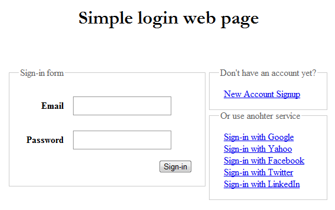

|  |
Sign-in/Sign-up Users
An attempt to put together an answer to how to sign-in/sign-up users using R2\Auth in an existing web application. This exapmle provide a simple implementation of the whole sign-in/sign-up process on a MVC environment. |